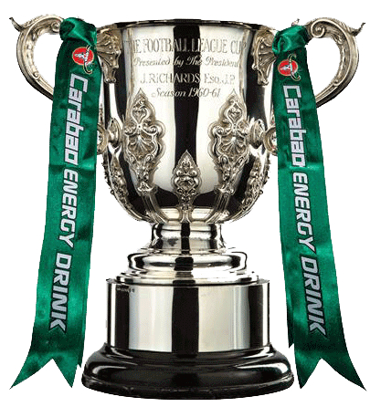
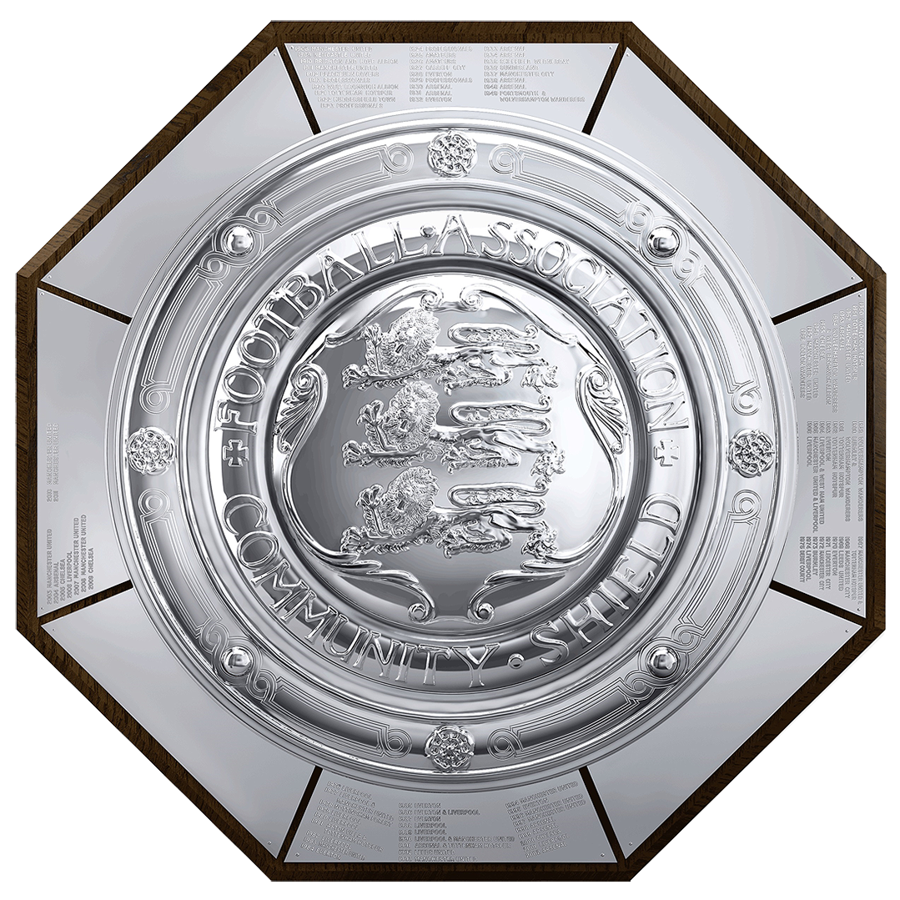

Tilbake til startsiden
Troféer
I nyere tider har ikke Tottenham vunnet så mye. Det har gitt dem et rykte om at de aldri har vunnet noe i historien. Det stemmer ikke, fordi Tottenham har faktisk 24 troféer!
Engelsk Førstedivisjon
Vunnet 2 ganger: 1950/1951 og 1960/1961
FA-cupen
Vunnet 8 ganger: 1900/1901, 1920/1921, 1960/1961, 1961/1962, 1966/1967, 1980/1981, 1981/1982 og 1990/1991

Ligacupen
Vunnet 4 ganger: 1970/1971, 1972/1973, 1998/1999 og 2007/2008
Cupvinner-cupen
Vunnet 1 gang: 1962/1963
Europa League
Vunnet 2 ganger: 1971/1972 og 1983/1984

Community Shield
Vunnet 7 ganger: 1920/1921, 1951/1952, 1961/1962, 1962/1963, 1967/1968, 1981/1982 og 1991/1992